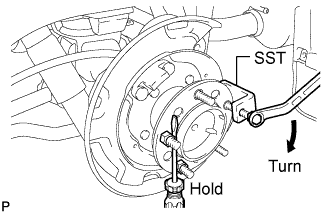
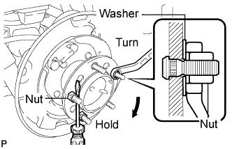

REAR AXLE HUB BOLT > REPLACEMENT |
| 1. REMOVE STABILIZER CONTROL VALVE PROTECTOR (w/ KDSS) |
 |
Detach the clamp, and disconnect the connector from the protector.
Remove the 3 bolts and protector.
| 2. OPEN STABILIZER CONTROL WITH ACCUMULATOR HOUSING SHUTTER VALVE (w/ KDSS) |
Using a 5 mm hexagon socket wrench, loosen the lower and upper chamber shutter valves of the stabilizer control with accumulator housing 2.0 to 3.5 turns.

| 3. REMOVE REAR WHEEL LH |
| 4. DISCONNECT REAR DISC BRAKE CYLINDER ASSEMBLY LH |
 |
Remove the 2 bolts and disconnect the rear disc brake cylinder.
| 5. REMOVE REAR DISC LH |
 |
Put matchmarks on the rear disc and axle hub if planning to reuse the disc.
 |
Turn the shoe adjuster as shown in the illustration until the disc turns freely, and then remove the disc.
| 6. REMOVE PARKING BRAKE SHOE RETURN TENSION SPRING LH |
 |
Using SST, remove the return spring.
| 7. REMOVE NO. 1 PARKING BRAKE SHOE ASSEMBLY LH |
 |
Using SST, remove the shoe hold down spring cup, compression spring and shoe hold down spring pin.
 |
Disconnect the tension spring from the No. 1 parking brake shoe.
 |
Remove the No. 1 parking brake shoe and shoe adjuster screw set.
| 8. REMOVE NO. 2 PARKING BRAKE SHOE ASSEMBLY LH |
 |
Using SST, remove the shoe hold down spring cup, compression spring and shoe hold down spring pin.
Remove the No. 2 parking brake shoe.
| 9. REMOVE PARKING BRAKE SHOE LEVER SUB-ASSEMBLY LH |
Disconnect the No. 3 parking brake cable from the parking brake shoe lever.
 |
Remove the parking brake shoe lever.
| 10. REMOVE REAR AXLE HUB BOLT LH |
 |
Using SST and a screwdriver or equivalent to hold the axle hub, remove the hub bolt.
| 11. INSTALL REAR AXLE HUB BOLT LH |
 |
Temporarily install a washer and hub nut to a new hub bolt as shown in the illustration.
Using a screwdriver or equivalent to hold the hub, turn the hub nut until the bottom surface of the hub bolt head touches the axle hub.
Remove the washer and hub nut.
| 12. INSTALL PARKING BRAKE SHOE LEVER SUB-ASSEMBLY LH |
 |
Apply high temperature grease to the parking brake anchor block.
Install the parking brake shoe lever to the No. 3 parking brake cable.
| 13. INSTALL NO. 2 PARKING BRAKE SHOE ASSEMBLY LH |
Apply high temperature grease to the areas of the backing plate that contact the shoe.
|
Using SST, install the No. 2 parking brake shoe with the shoe hold down spring pin, compression spring and shoe hold down spring cup.
| 14. INSTALL NO. 1 PARKING BRAKE SHOE ASSEMBLY LH |
Apply high temperature grease to the areas of the backing plate that contact the shoe.
 |
Apply high temperature grease to the thread and all joining areas of the parking brake shoe adjuster screw set.
|
Set the No. 1 parking brake shoe and shoe adjuster screw set in place.
|
Connect the tension spring.
|
Using SST, install the shoe hold down spring pin, compression spring and shoe hold down spring cup.
| 15. INSTALL PARKING BRAKE SHOE RETURN TENSION SPRING LH |
|
Using SST, install the shoe return spring.
| 16. CHECK PARKING BRAKE INSTALLATION |
Check that each part is installed properly.

| 17. INSTALL REAR DISC LH |
|
Align the matchmarks, and then install the rear disc.
| 18. ADJUST PARKING BRAKE SHOE CLEARANCE |
Remove the console cup holder box sub-assembly (Click here).
Completely release the parking brake lever.
Loosen the adjusting nut to completely release the parking brake cable.
 |
Temporarily install the hub nuts.
Remove the hole plug.
 |
Insert an adjustment tool into the adjustment hole of the disc. Rotate the adjustment wheel in the "X" direction until the shoes are locked. Then rotate the adjustment wheel in the "Y" direction 8 notches.
Check that the disc can be rotated lightly. If not, rotate the adjustment wheel in the "Y" direction and check again.
Install the hole plug.
Remove the hub nuts.
|
Turn the adjusting nut until the parking brake lever travel becomes correct.
Operate the parking brake lever 3 to 4 times, and check the parking brake lever travel.
Check whether the parking brake drags or not.
When operating the parking brake lever, check that the brake warning light comes on.
Install the console cup holder box sub-assembly (Click here).
| 19. CONNECT REAR DISC BRAKE CYLINDER ASSEMBLY LH |
|
Connect the rear disc brake cylinder and install 2 new bolts.
| 20. INSTALL REAR WHEEL LH |
| 21. CHECK PARKING BRAKE LEVER TRAVEL |
Fully pull the parking brake lever to engage the parking brake.
Release the lever to disengage the parking brake.
Slowly pull the parking brake lever all the way, and count the number of clicks.
| 22. ADJUST PARKING BRAKE LEVER TRAVEL |
Remove the console cup holder box sub-assembly (Click here).
Completely release the parking brake lever.
Loosen the adjusting nut to completely release the parking brake cable.
|
Temporarily install the hub nuts.
Remove the hole plug.
|
Insert an adjustment tool into the adjustment hole of the disc. Rotate the adjustment wheel in the "X" direction until the shoes are locked. Then rotate the adjustment wheel in the "Y" direction 8 notches.
Check that the disc can be rotated lightly. If not, rotate the adjustment wheel in the "Y" direction and check again.
Install the hole plug.
Remove the hub nuts.
|
Turn the adjusting nut until the parking brake lever travel becomes correct.
Operate the parking brake lever 3 to 4 times, and check the parking brake lever travel.
Check whether the parking brake drags or not.
When operating the parking brake lever, check that the brake warning light comes on.
Install the console cup holder box sub-assembly (Click here).
| 23. MEASURE VEHICLE HEIGHT (w/ KDSS) |
Set the tire pressure to the specified value(s) (Click here).
Bounce the vehicle to stabilize the suspension.
 |
Measure the distance from the ground to the top of the bumper and calculate the difference in the vehicle height between left and right. Perform this procedure for both the front and rear wheels.
| 24. CLOSE STABILIZER CONTROL WITH ACCUMULATOR HOUSING SHUTTER VALVE (w/ KDSS) |
Using a 5 mm hexagon socket wrench, tighten the lower and upper chamber shutter valves of the stabilizer control with accumulator housing.
| 25. INSTALL STABILIZER CONTROL VALVE PROTECTOR (w/ KDSS) |
|
Install the valve protector with the 3 bolts.
Attach the clamp, and connect the connector to the valve protector.